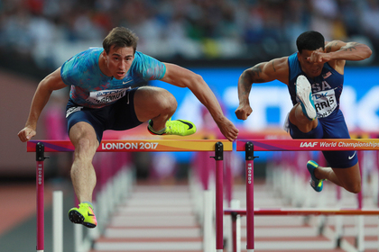

Правила легкой атлетики
Легкая атлетика: описание, виды, правила
Победителем в легкоатлетических соревнованиях считается спортсмен или команда, показавшие наилучший результат в финальных забегах или финальных попытках технических дисциплин. Количество участников соревнований определяется регламентом соревнований, при этом мужчины и женщины не участвуют в общих стартах. Беговые виды лёгкой атлетики, как правило, разбиваются на несколько этапов:
- квалификация
- ¼ финала
- ½ финала
- финала
Дисциплины лёгкой атлетики и годы включения их в программу Олимпийских игр и чемпионатов мира
| Дисциплина в программе | Олимпийских игр | Летних чемпионатов мира | Чемпионатов мира в помещении | |||
|---|---|---|---|---|---|---|
| Мужчины | Женщины | Мужчины | Женщины | Мужчины | Женщины | |
| Беговые | ||||||
| 1500м | 1896 | 1972 | 1983 | 1983 | 1985 | 1985 |
| 5000м | 1912 | 1988 | 1983 | 1995 | ||
| 10 000м | 1912 | 1984 | 1983 | 1987 | ||
| Марафон | 1896 | 1984 | 1983 | 1983 | ||
| 110м с/б | 1896 | 1983 | ||||
| 100м с/б | 1932 | 1983 | ||||
| 400м с/б | 1900 | 1984 | 1983 | 1983 | ||
| 3000м с/п | 1920 | 2008 | 1983 | 2007 | ||
| Эстафета 4х100 | 1912 | 1928 | 1983 | 1983 | ||
| Эстфаета 4х400 | 1912 | 1972 | 1983 | 1983 | 1991 | 1991 |